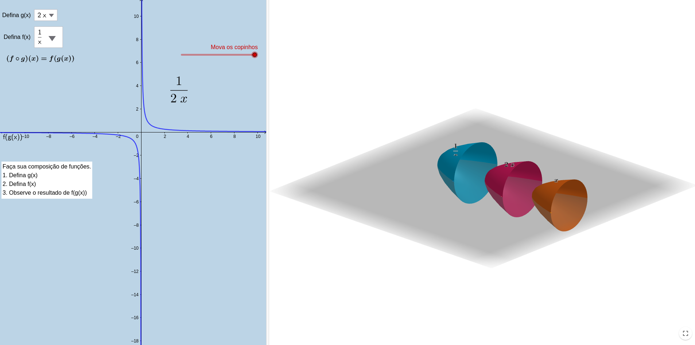
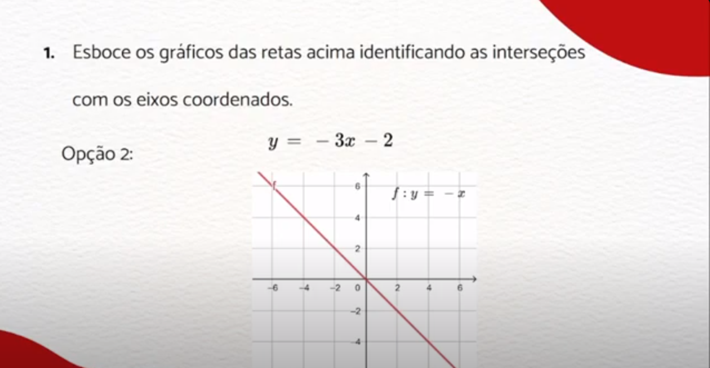
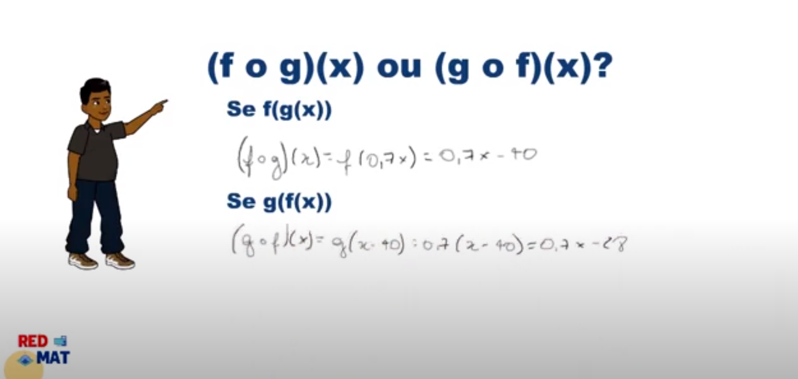
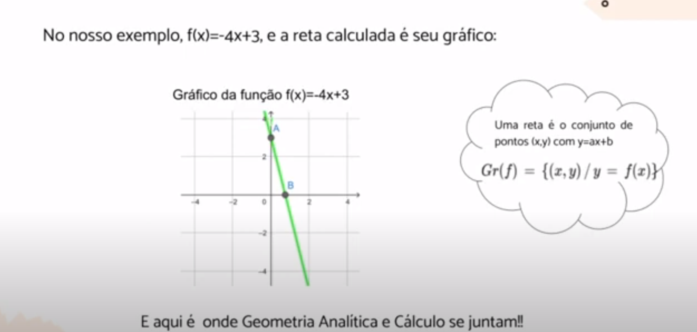
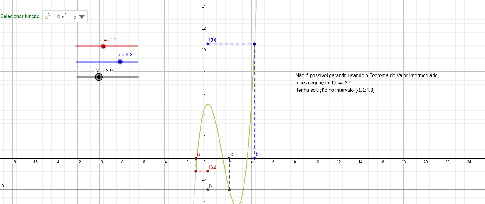
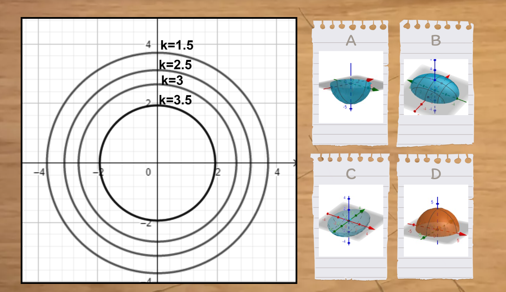

Funções de Uma Variável
No universo do aprendizado das funções de uma variável, os recursos computacionais emergem como aliados poderosos, oferecendo abordagens inovadoras e visualmente envolventes.
Plataformas online especializadas proporcionam não apenas videoaulas, mas também simulações interativas que permitem aos alunos manipular gráficos, compreender transformações e explorar o comportamento de funções em diferentes cenários.
Propriedades de Funções Trigonométricas


Monitor: Gabriel Domingues
Orientador: Begoña Alarcón
Ano: 2023
Playlist no youtube dos vídeos que demonstram as propriedadas das funções trigonométricas

Monitor: Gabriel Domingues
Orientador: Begoña Alarcón
Ano: 2023
Site em formato de quizz como uma atividade interativa para o aluno aprimorar seus conhecimentos sobre as propriedadas das funções trigonométricas
Função Composta


Monitores: Barbara Emily Rodrigues de Morais, Joao Lucas Ferraro Gonçalves, Lacerda de Abreu Soares, Maria Luiza Américo
Orientadores: Begoña Alarcón, Leonardo Silvares, Pablo Barrientos e Maria João
Ano: 2022
Um applet interativo projetado para facilitar o aprendizado de funções compostas, permitindo que os alunos visualizem e manipulem graficamente a composição de funções de forma intuitiva.
Resolução de Exercício: Retas

Monitora: Bárbara Moraes
Orientadores: Begoña Alarcón
Ano: 2022
(adicionar descrição)
Ilustração gráfica de composição de funções.

Monitora: Celine Abreu
Orientadora: Maria João Resende
Ano: 2022
(adicionar descrição)
Resolução de Exercícios.

Monitora: Bárbara Moraes
Orientadora: Begoña Alarcón
Ano: 2022
(adicionar descrição)
Cálculo de Funções de Uma Variável
Plataformas dedicadas ao ensino de matemática fornecem ambientes dinâmicos nos quais conceitos como limites, derivadas e integrais podem ser explorados de forma prática, estimulando uma compreensão mais profunda.
Esses recursos não apenas facilitam a visualização gráfica de conceitos matemáticos, mas também oferecem oportunidades de prática e feedback instantâneo, personalizando o processo de aprendizado e preparando os estudantes para uma sólida compreensão do cálculo de funções de uma variável.
Teorema de Rolle e Teorema do Valor Médio


Monitor: Gabriel Domingues
Orientador: Begoña Alarcón
Ano: 2023
Conteúdo criado para o Instagram utilizando Python sobre Teorema de Rolle e Teorema do Valor Médio
Teorema do Valor Médio

Monitores: Barbara Emily Rodrigues de Morais, Joao Lucas Ferraro Gonçalves, Lacerda de Abreu Soares, Maria Luiza Américo
Orientadores: Begoña Alarcón, Leonardo Silvares, Pablo Barrientos e Maria João
Ano: 2022
Applet criado no Geogebra para os alunos interagirem com o teorema do valor médio
Cálculo de Funções de Várias Variáveis
A integração da tecnologia no aprendizado de funções de várias variáveis no cálculo desempenha um papel fundamental na transformação da abordagem tradicional para uma experiência mais dinâmica e eficaz. Ambientes interativos online proporcionam aos estudantes a capacidade de explorar conceitos matemáticos complexos em um contexto mais palpável.
A representação visual de superfícies tridimensionais, com pontos de máximo, mínimo e inflexão, bem como curvas de nível e vetores gradiente, facilita a compreensão intuitiva das relações entre variáveis e o impacto de mudanças em diferentes direções. Além disso, a tecnologia oferece a oportunidade de experimentação, simulação e resolução de problemas práticos, capacitando os alunos a aplicar o cálculo de várias variáveis em situações do mundo real.
Vetor Gradiente e Curva de Nível
Monitor: Sergio Herman
Orientador: Pablo Barrientos
Ano: 2023
O livro de atividades apresenta abordagem visual com gráficos 3D de conceitos do vetor gradiente e algumas relações com a correspondente curva de nível.
Mapa de Contorno

Monitores: Ruan Soares Risso Possas, João Victor da Silvares, Gabriel Felice de Freitas Santos, Raphael Odalvo, João Pedro Teixeira, Maria Luiza Américo, Alan da Silva Gomes
Orientadores: Begoña Alarcón, Jones Colombo, Leandro Merlo, Leonardo Silvares e Pablo Barrientos.
Ano: 2021
Foi desenvolvido um site interativo, apresentando dois jogos destinado a auxiliar os alunos na conexão de conceitos relacionados a curvas de nível. Além disso, o site conta com diversas questões para os alunos praticarem
Equações Diferenciais Ordinárias
A utilização de recursos computacionais no aprendizado de Equações Diferenciais Ordinárias (EDOs) revoluciona a forma como os estudantes abordam sistemas dinâmicos. Softwares de simulação e algoritmos numéricos não apenas proporcionam uma compreensão visual e intuitiva das soluções, mas também capacitam os alunos a lidar eficientemente com problemas complexos, preparando-os para desafios práticos nas ciências e engenharia.
Modelagem Matemática com Geogebra
Monitor: Sergio Herman
Orientador: Pablo Barrientos
Ano: 2023
Applets que apresentam gráficos interativos para observação das inter-relações entre propriedades, estimulando o pensamento crítico na formulação de modelos matemáticos para a explicação científica de fenômenos específicos.